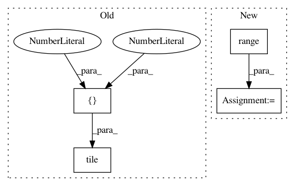

dca76ad8ebe547f400682f09e27d497254905d1d,models/official/detection/serving/inputs.py,,raw_image_tensor_input,#Any#Any#Any#,59
Before Change
images_info = tf.constant([image_info_per_image], dtype=tf.float32)
if batch_size is None:
batch_size = tf.shape(placeholder)[0]
images_info = tf.tile(images_info, [batch_size, 1, 1])
images = placeholder
return placeholder, {"images": images, "image_info": images_info}
After Change
images_info = tf.constant([image_info_per_image], dtype=tf.float32)
else:
images_info = tf.constant(
[image_info_per_image for _ in range(batch_size)],
dtype=tf.float32)
images = placeholder
In pattern: SUPERPATTERN
Frequency: 3
Non-data size: 4
Instances
Project Name: tensorflow/tpu
Commit Name: dca76ad8ebe547f400682f09e27d497254905d1d
Time: 2020-06-15
Author: pengchong@google.com
File Name: models/official/detection/serving/inputs.py
Class Name:
Method Name: raw_image_tensor_input
Project Name: GPflow/GPflow
Commit Name: 62972a279c51f80a890d813710f09d7d78065f6e
Time: 2016-07-07
Author: mv310@cam.ac.uk
File Name: GPflow/param.py
Class Name: Param
Method Name: get_samples_dict
Project Name: tensorflow/tpu
Commit Name: b6437e4dd115c5b290eb84b0620610b497293609
Time: 2020-05-12
Author: pengchong@google.com
File Name: models/official/detection/serving/inputs.py
Class Name:
Method Name: raw_image_tensor_input